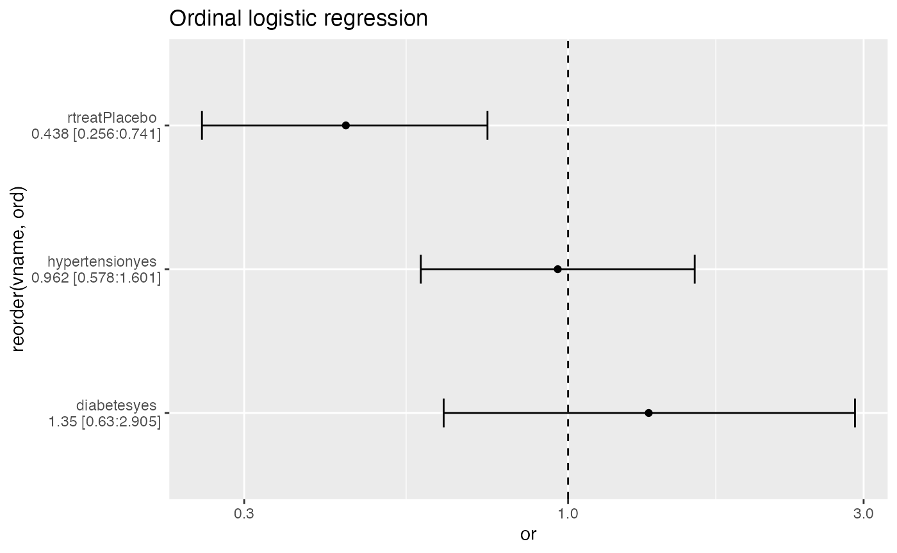
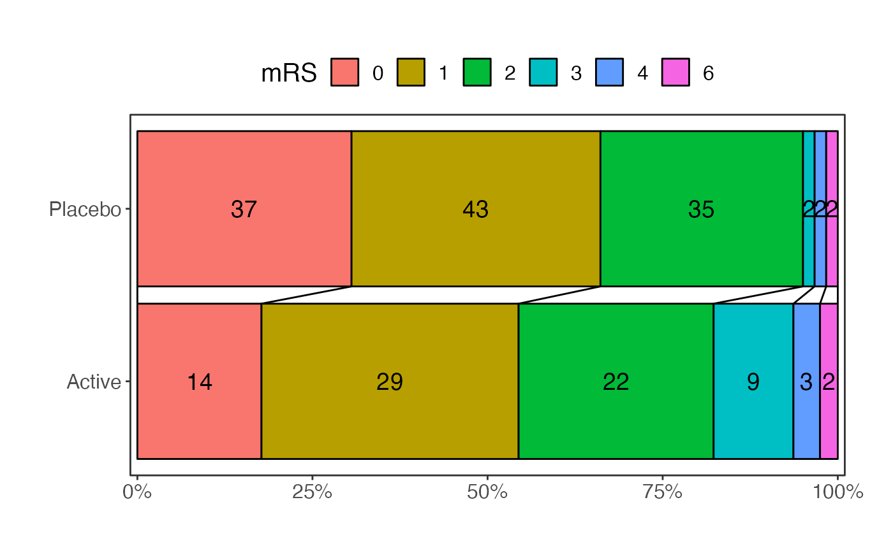
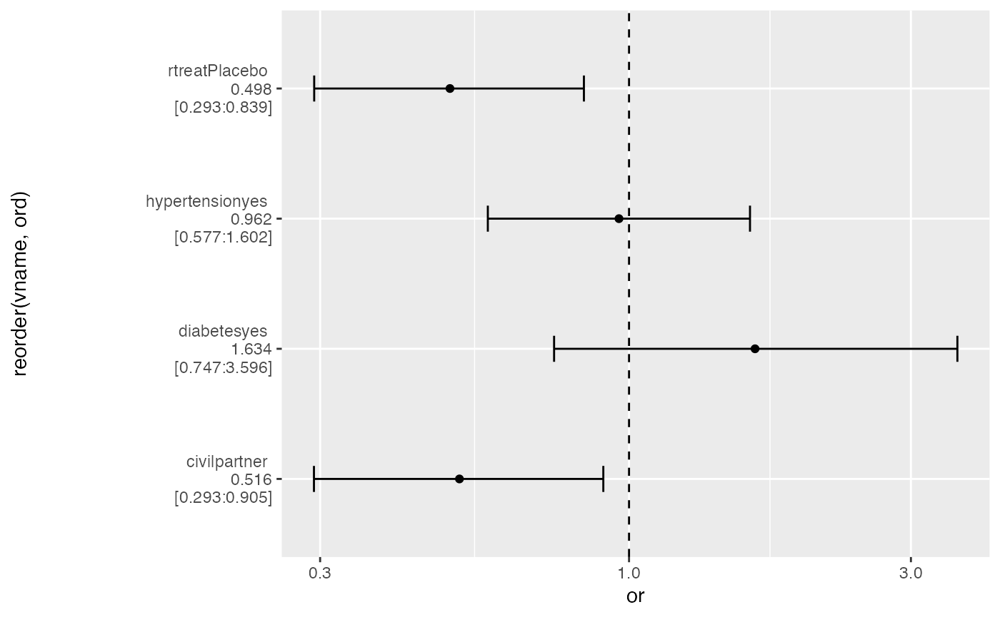
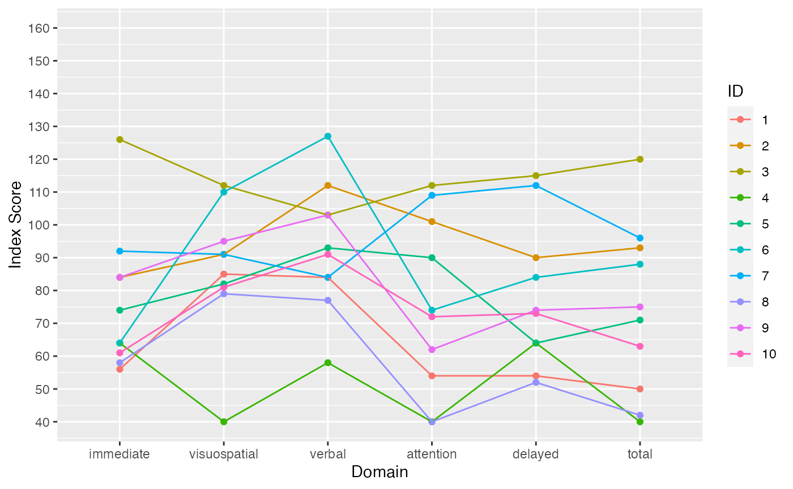

A toolbox
My own toolbox in my small workshop is a mix of some old, worn, well proven tools and some newcomers. This package should be seen as something like that.
I have tried to collect tools and functions from other packages that I use regularly in addition to functions that I have written myself to fill use cases, that I have not been able to find solutions to elsewhere.
In documenting and testing the package, I have used OpenAI’s chatgpt with gpttools. The chatgpt
is an interesting tool, that is in no way perfect, but it helps with
tedious tasks. Both gpttools and gptstudio
are interesting implementations in R and RStudio.
CPR manipulations
Note that, if handled, CPR numbers (social security numbers) should be handled with care as they a considered highly sensitive data.
The CPR number is structured as DDMMYY-XXXX, with the 1st X designating decade of birth, the last X designate binary gender (not biological sex) dependent on even/uneven as female/male, and the last for digits are used in a modulus calculation to verify the validity of the CPR number. Foreigners and unidentified persons are given temporary CPR numbers including letters.
More information can be found on cpr.dk.
Note, that all CPR numbers used in examples are publicly known or non-organic.
age_calc()
The age_calc() function was created as a learning exercise and
functions similarly to lubridate::time_length().
cpr_check()
Checks validity of CPR numbers according to the modulus 11 rule. Note that due to limitations in the possible available CPR numbers, this rule does not apply to all CPR numbers after 2007.
cpr_check(
c(
"2310450637",
"010190-2000",
"010115-4000",
"300450-1030",
"010150-4021",
"010150-4AA1"
)
)
#> OBS: as per 2007 not all valid CPR numbers apply to modulus 11 rule.
#>
#> See the vignette 'Toolbox'
#> Warning in matrix(as.numeric(unlist(strsplit(cpr_short, ""))), nrow = 10): NAs
#> introduced by coercion
#> [1] TRUE FALSE FALSE FALSE FALSE NAIncluding CPR numbers with letters gives a warning and
NA, as it can not be checked by the modulus 11 function.
Should be used with care, see the message.
cpr_dob()
Extracts date of birth (DOB) from a CPR number. Accounts for the decade of birth. See earlier.
cpr_female()
Gives logical vector of whether female gender from last digit of CPR.
table(cpr_female(stRoke::cprs[, 1]))
#>
#> FALSE TRUE
#> 98 102Plotting
ci_plot()
Plots odds ratios with 95 % confidence intervals. Performs binary logistic regression for outcome factors with two (2) levels and ordinal logistic regression for outcome factors with more than two levels. Mind relevant assumptions.
Outputs ggplot element for further manipulation.
data(talos)
talos[, "mrs_1"] <- factor(talos[, "mrs_1"], ordered = TRUE)
ci_plot(
ds = talos,
x = "rtreat",
y = "mrs_1",
vars = c("hypertension", "diabetes")
)
#> Waiting for profiling to be done...
generic_stroke()
For learning purposes. Uses annonymized data from the TALOS trial to
output a Table 1 (with gtsummary::tbl_summary()), plotting
the so-called grotta-bars based on mRS scores (with
rankinPlot::grottaBar()) and a ordinal logistic regression
model plot (with stRoke::ci_plot()).
generic_stroke(stRoke::talos,
"rtreat",
"mrs_6",
variables = c("hypertension", "diabetes", "civil"))
#> Waiting for profiling to be done...
#> $`Table 1`
#> <div id="oxsdboznol" style="padding-left:0px;padding-right:0px;padding-top:10px;padding-bottom:10px;overflow-x:auto;overflow-y:auto;width:auto;height:auto;">
#> <style>html {
#> font-family: -apple-system, BlinkMacSystemFont, 'Segoe UI', Roboto, Oxygen, Ubuntu, Cantarell, 'Helvetica Neue', 'Fira Sans', 'Droid Sans', Arial, sans-serif;
#> }
#>
#> #oxsdboznol .gt_table {
#> display: table;
#> border-collapse: collapse;
#> margin-left: auto;
#> margin-right: auto;
#> color: #333333;
#> font-size: 16px;
#> font-weight: normal;
#> font-style: normal;
#> background-color: #FFFFFF;
#> width: auto;
#> border-top-style: solid;
#> border-top-width: 2px;
#> border-top-color: #A8A8A8;
#> border-right-style: none;
#> border-right-width: 2px;
#> border-right-color: #D3D3D3;
#> border-bottom-style: solid;
#> border-bottom-width: 2px;
#> border-bottom-color: #A8A8A8;
#> border-left-style: none;
#> border-left-width: 2px;
#> border-left-color: #D3D3D3;
#> }
#>
#> #oxsdboznol .gt_heading {
#> background-color: #FFFFFF;
#> text-align: center;
#> border-bottom-color: #FFFFFF;
#> border-left-style: none;
#> border-left-width: 1px;
#> border-left-color: #D3D3D3;
#> border-right-style: none;
#> border-right-width: 1px;
#> border-right-color: #D3D3D3;
#> }
#>
#> #oxsdboznol .gt_caption {
#> padding-top: 4px;
#> padding-bottom: 4px;
#> }
#>
#> #oxsdboznol .gt_title {
#> color: #333333;
#> font-size: 125%;
#> font-weight: initial;
#> padding-top: 4px;
#> padding-bottom: 4px;
#> padding-left: 5px;
#> padding-right: 5px;
#> border-bottom-color: #FFFFFF;
#> border-bottom-width: 0;
#> }
#>
#> #oxsdboznol .gt_subtitle {
#> color: #333333;
#> font-size: 85%;
#> font-weight: initial;
#> padding-top: 0;
#> padding-bottom: 6px;
#> padding-left: 5px;
#> padding-right: 5px;
#> border-top-color: #FFFFFF;
#> border-top-width: 0;
#> }
#>
#> #oxsdboznol .gt_bottom_border {
#> border-bottom-style: solid;
#> border-bottom-width: 2px;
#> border-bottom-color: #D3D3D3;
#> }
#>
#> #oxsdboznol .gt_col_headings {
#> border-top-style: solid;
#> border-top-width: 2px;
#> border-top-color: #D3D3D3;
#> border-bottom-style: solid;
#> border-bottom-width: 2px;
#> border-bottom-color: #D3D3D3;
#> border-left-style: none;
#> border-left-width: 1px;
#> border-left-color: #D3D3D3;
#> border-right-style: none;
#> border-right-width: 1px;
#> border-right-color: #D3D3D3;
#> }
#>
#> #oxsdboznol .gt_col_heading {
#> color: #333333;
#> background-color: #FFFFFF;
#> font-size: 100%;
#> font-weight: normal;
#> text-transform: inherit;
#> border-left-style: none;
#> border-left-width: 1px;
#> border-left-color: #D3D3D3;
#> border-right-style: none;
#> border-right-width: 1px;
#> border-right-color: #D3D3D3;
#> vertical-align: bottom;
#> padding-top: 5px;
#> padding-bottom: 6px;
#> padding-left: 5px;
#> padding-right: 5px;
#> overflow-x: hidden;
#> }
#>
#> #oxsdboznol .gt_column_spanner_outer {
#> color: #333333;
#> background-color: #FFFFFF;
#> font-size: 100%;
#> font-weight: normal;
#> text-transform: inherit;
#> padding-top: 0;
#> padding-bottom: 0;
#> padding-left: 4px;
#> padding-right: 4px;
#> }
#>
#> #oxsdboznol .gt_column_spanner_outer:first-child {
#> padding-left: 0;
#> }
#>
#> #oxsdboznol .gt_column_spanner_outer:last-child {
#> padding-right: 0;
#> }
#>
#> #oxsdboznol .gt_column_spanner {
#> border-bottom-style: solid;
#> border-bottom-width: 2px;
#> border-bottom-color: #D3D3D3;
#> vertical-align: bottom;
#> padding-top: 5px;
#> padding-bottom: 5px;
#> overflow-x: hidden;
#> display: inline-block;
#> width: 100%;
#> }
#>
#> #oxsdboznol .gt_group_heading {
#> padding-top: 8px;
#> padding-bottom: 8px;
#> padding-left: 5px;
#> padding-right: 5px;
#> color: #333333;
#> background-color: #FFFFFF;
#> font-size: 100%;
#> font-weight: initial;
#> text-transform: inherit;
#> border-top-style: solid;
#> border-top-width: 2px;
#> border-top-color: #D3D3D3;
#> border-bottom-style: solid;
#> border-bottom-width: 2px;
#> border-bottom-color: #D3D3D3;
#> border-left-style: none;
#> border-left-width: 1px;
#> border-left-color: #D3D3D3;
#> border-right-style: none;
#> border-right-width: 1px;
#> border-right-color: #D3D3D3;
#> vertical-align: middle;
#> text-align: left;
#> }
#>
#> #oxsdboznol .gt_empty_group_heading {
#> padding: 0.5px;
#> color: #333333;
#> background-color: #FFFFFF;
#> font-size: 100%;
#> font-weight: initial;
#> border-top-style: solid;
#> border-top-width: 2px;
#> border-top-color: #D3D3D3;
#> border-bottom-style: solid;
#> border-bottom-width: 2px;
#> border-bottom-color: #D3D3D3;
#> vertical-align: middle;
#> }
#>
#> #oxsdboznol .gt_from_md > :first-child {
#> margin-top: 0;
#> }
#>
#> #oxsdboznol .gt_from_md > :last-child {
#> margin-bottom: 0;
#> }
#>
#> #oxsdboznol .gt_row {
#> padding-top: 8px;
#> padding-bottom: 8px;
#> padding-left: 5px;
#> padding-right: 5px;
#> margin: 10px;
#> border-top-style: solid;
#> border-top-width: 1px;
#> border-top-color: #D3D3D3;
#> border-left-style: none;
#> border-left-width: 1px;
#> border-left-color: #D3D3D3;
#> border-right-style: none;
#> border-right-width: 1px;
#> border-right-color: #D3D3D3;
#> vertical-align: middle;
#> overflow-x: hidden;
#> }
#>
#> #oxsdboznol .gt_stub {
#> color: #333333;
#> background-color: #FFFFFF;
#> font-size: 100%;
#> font-weight: initial;
#> text-transform: inherit;
#> border-right-style: solid;
#> border-right-width: 2px;
#> border-right-color: #D3D3D3;
#> padding-left: 5px;
#> padding-right: 5px;
#> }
#>
#> #oxsdboznol .gt_stub_row_group {
#> color: #333333;
#> background-color: #FFFFFF;
#> font-size: 100%;
#> font-weight: initial;
#> text-transform: inherit;
#> border-right-style: solid;
#> border-right-width: 2px;
#> border-right-color: #D3D3D3;
#> padding-left: 5px;
#> padding-right: 5px;
#> vertical-align: top;
#> }
#>
#> #oxsdboznol .gt_row_group_first td {
#> border-top-width: 2px;
#> }
#>
#> #oxsdboznol .gt_summary_row {
#> color: #333333;
#> background-color: #FFFFFF;
#> text-transform: inherit;
#> padding-top: 8px;
#> padding-bottom: 8px;
#> padding-left: 5px;
#> padding-right: 5px;
#> }
#>
#> #oxsdboznol .gt_first_summary_row {
#> border-top-style: solid;
#> border-top-color: #D3D3D3;
#> }
#>
#> #oxsdboznol .gt_first_summary_row.thick {
#> border-top-width: 2px;
#> }
#>
#> #oxsdboznol .gt_last_summary_row {
#> padding-top: 8px;
#> padding-bottom: 8px;
#> padding-left: 5px;
#> padding-right: 5px;
#> border-bottom-style: solid;
#> border-bottom-width: 2px;
#> border-bottom-color: #D3D3D3;
#> }
#>
#> #oxsdboznol .gt_grand_summary_row {
#> color: #333333;
#> background-color: #FFFFFF;
#> text-transform: inherit;
#> padding-top: 8px;
#> padding-bottom: 8px;
#> padding-left: 5px;
#> padding-right: 5px;
#> }
#>
#> #oxsdboznol .gt_first_grand_summary_row {
#> padding-top: 8px;
#> padding-bottom: 8px;
#> padding-left: 5px;
#> padding-right: 5px;
#> border-top-style: double;
#> border-top-width: 6px;
#> border-top-color: #D3D3D3;
#> }
#>
#> #oxsdboznol .gt_striped {
#> background-color: rgba(128, 128, 128, 0.05);
#> }
#>
#> #oxsdboznol .gt_table_body {
#> border-top-style: solid;
#> border-top-width: 2px;
#> border-top-color: #D3D3D3;
#> border-bottom-style: solid;
#> border-bottom-width: 2px;
#> border-bottom-color: #D3D3D3;
#> }
#>
#> #oxsdboznol .gt_footnotes {
#> color: #333333;
#> background-color: #FFFFFF;
#> border-bottom-style: none;
#> border-bottom-width: 2px;
#> border-bottom-color: #D3D3D3;
#> border-left-style: none;
#> border-left-width: 2px;
#> border-left-color: #D3D3D3;
#> border-right-style: none;
#> border-right-width: 2px;
#> border-right-color: #D3D3D3;
#> }
#>
#> #oxsdboznol .gt_footnote {
#> margin: 0px;
#> font-size: 90%;
#> padding-left: 4px;
#> padding-right: 4px;
#> padding-left: 5px;
#> padding-right: 5px;
#> }
#>
#> #oxsdboznol .gt_sourcenotes {
#> color: #333333;
#> background-color: #FFFFFF;
#> border-bottom-style: none;
#> border-bottom-width: 2px;
#> border-bottom-color: #D3D3D3;
#> border-left-style: none;
#> border-left-width: 2px;
#> border-left-color: #D3D3D3;
#> border-right-style: none;
#> border-right-width: 2px;
#> border-right-color: #D3D3D3;
#> }
#>
#> #oxsdboznol .gt_sourcenote {
#> font-size: 90%;
#> padding-top: 4px;
#> padding-bottom: 4px;
#> padding-left: 5px;
#> padding-right: 5px;
#> }
#>
#> #oxsdboznol .gt_left {
#> text-align: left;
#> }
#>
#> #oxsdboznol .gt_center {
#> text-align: center;
#> }
#>
#> #oxsdboznol .gt_right {
#> text-align: right;
#> font-variant-numeric: tabular-nums;
#> }
#>
#> #oxsdboznol .gt_font_normal {
#> font-weight: normal;
#> }
#>
#> #oxsdboznol .gt_font_bold {
#> font-weight: bold;
#> }
#>
#> #oxsdboznol .gt_font_italic {
#> font-style: italic;
#> }
#>
#> #oxsdboznol .gt_super {
#> font-size: 65%;
#> }
#>
#> #oxsdboznol .gt_footnote_marks {
#> font-style: italic;
#> font-weight: normal;
#> font-size: 75%;
#> vertical-align: 0.4em;
#> }
#>
#> #oxsdboznol .gt_asterisk {
#> font-size: 100%;
#> vertical-align: 0;
#> }
#>
#> #oxsdboznol .gt_indent_1 {
#> text-indent: 5px;
#> }
#>
#> #oxsdboznol .gt_indent_2 {
#> text-indent: 10px;
#> }
#>
#> #oxsdboznol .gt_indent_3 {
#> text-indent: 15px;
#> }
#>
#> #oxsdboznol .gt_indent_4 {
#> text-indent: 20px;
#> }
#>
#> #oxsdboznol .gt_indent_5 {
#> text-indent: 25px;
#> }
#> </style>
#> <table class="gt_table">
#>
#> <thead class="gt_col_headings">
#> <tr>
#> <th class="gt_col_heading gt_columns_bottom_border gt_left" rowspan="1" colspan="1" scope="col" id="<strong>Characteristic</strong>"><strong>Characteristic</strong></th>
#> <th class="gt_col_heading gt_columns_bottom_border gt_center" rowspan="1" colspan="1" scope="col" id="<strong>Overall</strong>, N = 200<sup class="gt_footnote_marks">1</sup>"><strong>Overall</strong>, N = 200<sup class="gt_footnote_marks">1</sup></th>
#> <th class="gt_col_heading gt_columns_bottom_border gt_center" rowspan="1" colspan="1" scope="col" id="<strong>Active</strong>, N = 79<sup class="gt_footnote_marks">1</sup>"><strong>Active</strong>, N = 79<sup class="gt_footnote_marks">1</sup></th>
#> <th class="gt_col_heading gt_columns_bottom_border gt_center" rowspan="1" colspan="1" scope="col" id="<strong>Placebo</strong>, N = 121<sup class="gt_footnote_marks">1</sup>"><strong>Placebo</strong>, N = 121<sup class="gt_footnote_marks">1</sup></th>
#> </tr>
#> </thead>
#> <tbody class="gt_table_body">
#> <tr><td headers="label" class="gt_row gt_left">hypertension</td>
#> <td headers="stat_0" class="gt_row gt_center">101 (50%)</td>
#> <td headers="stat_1" class="gt_row gt_center">38 (48%)</td>
#> <td headers="stat_2" class="gt_row gt_center">63 (52%)</td></tr>
#> <tr><td headers="label" class="gt_row gt_left">diabetes</td>
#> <td headers="stat_0" class="gt_row gt_center">23 (12%)</td>
#> <td headers="stat_1" class="gt_row gt_center">9 (11%)</td>
#> <td headers="stat_2" class="gt_row gt_center">14 (12%)</td></tr>
#> <tr><td headers="label" class="gt_row gt_left">civil</td>
#> <td headers="stat_0" class="gt_row gt_center"></td>
#> <td headers="stat_1" class="gt_row gt_center"></td>
#> <td headers="stat_2" class="gt_row gt_center"></td></tr>
#> <tr><td headers="label" class="gt_row gt_left"> alone</td>
#> <td headers="stat_0" class="gt_row gt_center">59 (30%)</td>
#> <td headers="stat_1" class="gt_row gt_center">22 (28%)</td>
#> <td headers="stat_2" class="gt_row gt_center">37 (31%)</td></tr>
#> <tr><td headers="label" class="gt_row gt_left"> partner</td>
#> <td headers="stat_0" class="gt_row gt_center">141 (70%)</td>
#> <td headers="stat_1" class="gt_row gt_center">57 (72%)</td>
#> <td headers="stat_2" class="gt_row gt_center">84 (69%)</td></tr>
#> </tbody>
#>
#> <tfoot class="gt_footnotes">
#> <tr>
#> <td class="gt_footnote" colspan="4"><sup class="gt_footnote_marks">1</sup> n (%)</td>
#> </tr>
#> </tfoot>
#> </table>
#> </div>
#>
#> $`Figure 1`
#>
#> $`Figure 2`
index_plot()
Used for plotting scores from a multi dimensional patient test.
index_plot(stRoke::score[score$event == "A", ])
win_prob()
The win_prob() is an implementation of the Tournament
Method for calculating the probability of winning as suggested by Zou et al 2022.
The authors has included a spreadsheet as supplementary materials. This
function aims to mimic that functionality. The function also includes a
print() extension for nice printing.
win_prob(
data = stRoke::talos,
response = "mrs_6",
group = "rtreat",
sample.size = TRUE,
print.tables = TRUE
)
#> $list_cum
#> $list_cum$Active
#> mrs_6 rtreat Freq prop overall_rank rank win_frac
#> 1 0 Active 14 0.17721519 175.0 72.5 0.847107438
#> 2 1 Active 29 0.36708861 113.5 51.0 0.516528926
#> 3 2 Active 22 0.27848101 49.0 25.5 0.194214876
#> 4 3 Active 9 0.11392405 15.0 10.0 0.041322314
#> 5 4 Active 3 0.03797468 7.0 4.0 0.024793388
#> 6 6 Active 2 0.02531646 2.5 1.5 0.008264463
#>
#> $list_cum$Placebo
#> mrs_6 rtreat Freq prop overall_rank rank win_frac
#> 7 0 Placebo 37 0.30578512 175.0 103.0 0.91139241
#> 8 1 Placebo 43 0.35537190 113.5 63.0 0.63924051
#> 9 2 Placebo 35 0.28925620 49.0 24.0 0.31645570
#> 10 3 Placebo 2 0.01652893 15.0 5.5 0.12025316
#> 11 4 Placebo 2 0.01652893 7.0 3.5 0.04430380
#> 12 6 Placebo 2 0.01652893 2.5 1.5 0.01265823
#>
#>
#> $group_levels
#> [1] "Active" "Placebo"
#>
#> $sum_a
#> [1] 79
#>
#> $sum_b
#> [1] 121
#>
#> $winP_a
#> [1] 0.3996757
#>
#> $winP_b
#> [1] 0.6003243
#>
#> $var_win_frac_a
#> [1] 0.07609113
#>
#> $var_win_frac_b
#> [1] 0.06806341
#>
#> $var_win_prob
#> [1] 0.001525686
#>
#> $se_win_prob
#> [1] 0.03906004
#>
#> $conf.int
#> [1] 0.6124886 0.3724300
#>
#> $test_stat
#> [1] 2.498962
#>
#> $p_val
#> [1] 0.01245577
#>
#> $nnt
#> [1] -9.967675
#>
#> $ss_n
#> [1] 238
#>
#> $param.record
#> $param.record$data
#> rtreat mrs_1 mrs_6 hypertension diabetes civil
#> 38 Active 1 1 no no partner
#> 434 Active 1 1 yes no partner
#> 588 Active 2 2 yes no partner
#> 42 Active 0 0 yes no partner
#> 160 Placebo 1 1 yes no partner
#> 174 Active 0 1 yes no alone
#> 11 Placebo 2 1 yes yes alone
#> 601 Placebo 1 1 no no partner
#> 412 Active 0 0 yes no partner
#> 88 Placebo 1 1 yes yes partner
#> 56 Placebo 0 0 no no alone
#> 235 Placebo 2 1 yes yes alone
#> 205 Active 3 3 no no partner
#> 62 Active 2 2 yes no alone
#> 593 Placebo 2 2 no no alone
#> 143 Active 2 1 yes no partner
#> 520 Active 2 2 no yes partner
#> 144 Placebo 1 0 yes no partner
#> 383 Active 2 3 no no alone
#> 347 Placebo 1 0 yes yes partner
#> 346 Active 1 2 yes no partner
#> 318 Placebo 2 2 no no partner
#> 231 Placebo 2 2 no no partner
#> 190 Active 1 1 yes no partner
#> 287 Placebo 2 2 yes no partner
#> 633 Placebo 1 1 no no partner
#> 228 Placebo 4 3 yes no partner
#> 409 Active 1 2 yes no partner
#> 603 Placebo 2 1 no no alone
#> 628 Placebo 1 2 no no partner
#> 91 Active 1 0 yes no partner
#> 537 Placebo 4 4 no no partner
#> 75 Placebo 1 2 yes no partner
#> 282 Placebo 1 0 no no partner
#> 249 Active 1 1 no no alone
#> 72 Active 2 3 yes no partner
#> 222 Active 2 2 yes no partner
#> 258 Placebo 0 1 no no partner
#> 134 Active 4 4 no no partner
#> 117 Active 1 1 no yes partner
#> 377 Active 2 1 no no partner
#> 583 Placebo 3 2 yes no partner
#> 552 Active 3 1 yes no alone
#> 124 Placebo 2 2 yes yes partner
#> 189 Placebo 1 0 no yes partner
#> 521 Placebo 1 2 yes yes alone
#> 429 Active 2 1 no no partner
#> 203 Placebo 1 1 yes no partner
#> 172 Active 1 2 no no partner
#> 402 Placebo 2 2 yes no partner
#> 574 Placebo 1 1 yes no partner
#> 271 Active 4 3 no no partner
#> 50 Placebo 3 2 no no alone
#> 264 Active 4 2 no no alone
#> 571 Active 2 0 yes no partner
#> 239 Active 3 3 yes no alone
#> 262 Placebo 2 1 yes no partner
#> 236 Placebo 1 1 no no partner
#> 94 Placebo 1 1 no no partner
#> 275 Placebo 0 0 no no partner
#> 26 Placebo 2 4 no no alone
#> 476 Placebo 1 1 no no alone
#> 427 Active 2 3 yes no alone
#> 359 Placebo 1 2 yes no alone
#> 341 Active 4 3 yes no alone
#> 457 Active 1 1 yes yes partner
#> 485 Placebo 0 0 no no partner
#> 171 Placebo 2 2 no no partner
#> 97 Placebo 2 1 yes no partner
#> 635 Placebo 1 2 no no alone
#> 472 Placebo 1 0 yes no partner
#> 408 Active 1 1 yes yes partner
#> 158 Placebo 0 0 no no partner
#> 63 Placebo 1 0 no yes alone
#> 557 Active 2 2 no no partner
#> 73 Active 1 1 yes no partner
#> 425 Placebo 2 0 yes no partner
#> 423 Placebo 2 2 yes yes partner
#> 272 Active 2 1 yes no alone
#> 122 Active 1 0 no no partner
#> 370 Active 0 1 no no partner
#> 274 Placebo 0 0 no no partner
#> 407 Active 0 0 no no partner
#> 482 Placebo 1 1 no no partner
#> 586 Active 6 6 yes yes partner
#> 20 Placebo 1 2 no no alone
#> 568 Active 1 0 no no partner
#> 331 Placebo 1 1 no no alone
#> 133 Placebo 1 1 no no partner
#> 563 Active 4 4 yes no partner
#> 349 Placebo 1 2 yes yes alone
#> 381 Placebo 1 1 yes no partner
#> 549 Placebo 1 1 no no alone
#> 34 Active 1 1 no no alone
#> 33 Placebo 0 0 yes no alone
#> 531 Placebo 2 2 yes no alone
#> 389 Active 1 0 no no alone
#> 64 Active 1 1 yes yes alone
#> 428 Active 2 1 yes no partner
#> 403 Placebo 2 2 yes no alone
#> 343 Placebo 1 0 no no partner
#> 294 Active 2 2 no no alone
#> 76 Placebo 3 1 no no alone
#> 166 Placebo 1 0 yes no partner
#> 209 Placebo 0 1 yes no partner
#> 626 Active 2 2 yes no alone
#> 481 Active 5 3 no no partner
#> 376 Active 2 2 yes yes partner
#> 67 Active 3 2 no no partner
#> 130 Placebo 2 1 no no partner
#> 250 Active 2 1 yes no partner
#> 609 Active 2 2 no no partner
#> 545 Placebo 3 2 yes no partner
#> 226 Placebo 2 1 no no partner
#> 276 Placebo 1 2 no no partner
#> 305 Placebo 0 0 yes no partner
#> 202 Placebo 1 0 yes no alone
#> 245 Placebo 1 1 no no partner
#> 131 Active 3 1 no no partner
#> 505 Active 2 1 no no partner
#> 546 Placebo 2 2 yes no alone
#> 639 Placebo 1 1 yes yes partner
#> 219 Active 2 1 yes no partner
#> 244 Placebo 2 2 yes no alone
#> 348 Placebo 0 0 no no partner
#> 280 Placebo 0 0 yes no partner
#> 504 Placebo 2 2 yes no partner
#> 51 Placebo 1 1 no no alone
#> 493 Active 6 6 no no alone
#> 167 Placebo 0 1 yes no partner
#> 58 Placebo 1 0 no no partner
#> 169 Active 0 0 no no partner
#> 293 Active 1 0 no no partner
#> 334 Placebo 6 6 no no partner
#> 28 Active 2 2 yes no partner
#> 1 Placebo 0 0 yes no partner
#> 463 Active 2 1 yes no alone
#> 445 Placebo 1 2 yes no alone
#> 320 Placebo 1 2 yes yes alone
#> 500 Placebo 0 0 no no alone
#> 175 Placebo 1 2 yes no partner
#> 201 Placebo 0 0 yes no partner
#> 142 Active 2 0 no no partner
#> 278 Active 0 1 yes no alone
#> 181 Placebo 0 0 no no partner
#> 193 Placebo 2 1 yes no alone
#> 321 Active 2 0 no no partner
#> 598 Active 0 1 no no partner
#> 217 Placebo 0 0 yes no partner
#> 13 Active 1 1 yes no partner
#> 242 Placebo 2 0 yes no partner
#> 513 Placebo 1 1 no no partner
#> 518 Placebo 2 2 yes no partner
#> 304 Placebo 2 2 no no partner
#> 587 Placebo 1 2 no no alone
#> 497 Placebo 0 1 yes no partner
#> 296 Placebo 0 0 yes no partner
#> 526 Active 1 1 no no partner
#> 2 Placebo 2 1 no no partner
#> 627 Active 2 2 no yes partner
#> 126 Placebo 2 1 yes no partner
#> 420 Placebo 2 0 yes no partner
#> 392 Active 2 2 yes no partner
#> 522 Placebo 3 2 yes no alone
#> 312 Active 4 4 no yes partner
#> 9 Placebo 1 1 no no partner
#> 29 Placebo 2 2 no no alone
#> 7 Placebo 1 1 yes no partner
#> 49 Placebo 2 1 no yes partner
#> 439 Placebo 3 2 no no alone
#> 46 Active 0 0 yes no alone
#> 80 Active 1 1 no no partner
#> 237 Placebo 0 0 yes no partner
#> 306 Placebo 2 0 no no alone
#> 345 Placebo 0 0 yes no partner
#> 153 Active 2 2 no no partner
#> 98 Placebo 1 0 yes no partner
#> 44 Placebo 2 1 yes no partner
#> 458 Active 3 2 no no partner
#> 585 Placebo 1 1 yes no partner
#> 211 Placebo 3 2 no yes partner
#> 610 Active 1 1 no no alone
#> 310 Placebo 0 0 no no alone
#> 541 Active 4 2 yes no partner
#> 161 Placebo 1 1 no no partner
#> 641 Placebo 1 1 no no partner
#> 538 Placebo 1 1 no no partner
#> 281 Placebo 1 0 no no partner
#> 301 Active 3 2 yes no partner
#> 356 Active 3 2 no no alone
#> 59 Active 3 3 no no alone
#> 302 Placebo 1 0 yes no partner
#> 116 Active 1 0 no no partner
#> 547 Placebo 2 2 no no partner
#> 22 Placebo 2 1 no no partner
#> 517 Placebo 4 3 yes no partner
#> 344 Placebo 1 1 yes no partner
#> 48 Placebo 2 0 yes no alone
#> 100 Placebo 1 0 yes no alone
#> 93 Placebo 6 6 yes no alone
#>
#> $param.record$response
#> [1] "mrs_6"
#>
#> $param.record$group
#> [1] "rtreat"
#>
#> $param.record$alpha
#> [1] 0.05
#>
#> $param.record$beta
#> [1] 0.2
#>
#> $param.record$group.ratio
#> [1] 1
#>
#> $param.record$sample.size
#> [1] TRUE
#>
#> $param.record$print.tables
#> [1] TRUE
#>
#> $param.record$dec
#> [1] 3
#>
#>
#> attr(,"class")
#> [1] "win_Prop" "list"